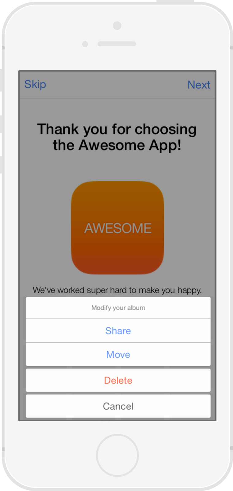
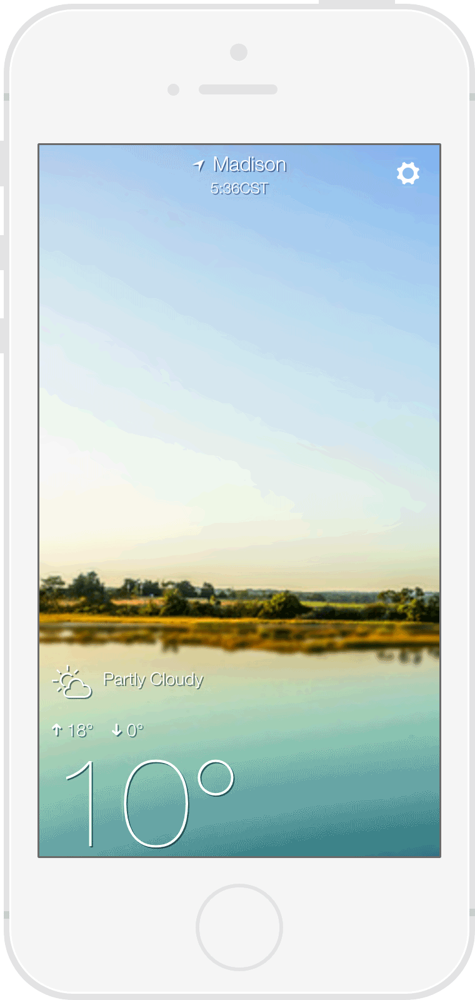
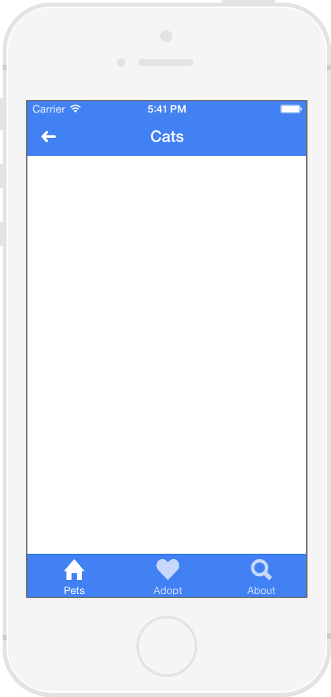

Un framework open source, pour le développement d'applications mobiles hybrides en HTML5.
ionicframework.com
“Vous souhaitez une application native ou hybride?”
Natif


Plusieurs plateformes. Plusieurs problèmes solutions
Les Incovénients du Natif
- Une connaissance pour chaques plateformes
- Code source distinct
- Développement coûteux
“Et sinon l'hybride?”
Hybride
- Vue web contenue dans une couche native
- Accès direct aux APIs natives
- Cordova/Phonegap
“Hello.”
Technologies Web Standard


Couplé à AngularJS
- Les composants UI sont des Directives AngularJS
- Ne demande aucun code spécifique
CSS Généré Par Sass
Donnez à vos applications votre propre style
Performances
- Accélération Matérielle des Animations
- Minimum de Manipulation du DOM
- Pas de jQuery (vous pouvez l'inclure si besoin)
Natif
- Fourni un squellette pour les applications
- Conçu pour travailler avec Cordova/Phonegap
Design
- Système visuel cohérent
- Propre et simple
- Facile à customiser
Ionicons

Plus de 500 icons (font-icons) inclues

Listes

Listes Complexes
- Directives AngularJS
- Boutons exposés au balayage
- Réorganiser
- Supprimer

{{ item.name }}
{{ item.quote }}

Onglets
- Vues imbriquées (ui-routeur)
- Historique de navigation


Slide Box
Slide 1
Slide 2
Slide 3
<

Menu d'actions
$ionicActionSheet.show({
titleText: 'Modify your album',
buttons: [
{ text: 'Share' },
{ text: 'Move' },
],
destructiveText: 'Delete',
cancelText: 'Cancel',
buttonClicked: function(index) {
console.log('BUTTON CLICKED', index);
return true;
}
});

Tirez pour actualiser

Navigation
- Affiche un bouton de retour
- Chaque onglet à son propre historique de navigation
- Fonctionne avec le bouton retour d'Android.
Ainsi que pleins d'autres composants à découvrir